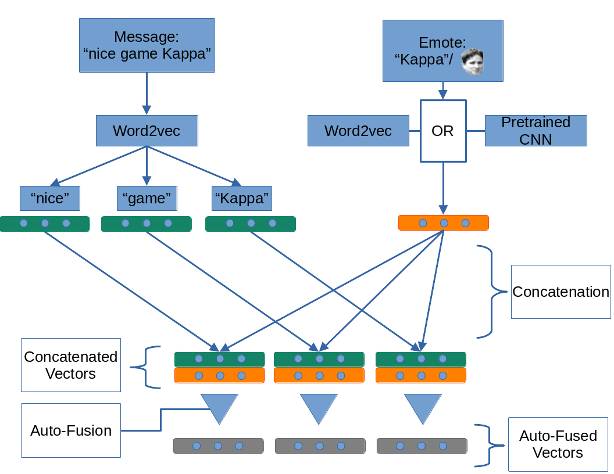

Modelling Semantic Change on Twitch.tv Chat Messages
Master Thesis Defense

04. Oktober 2021
Armin Bernstetter
Structure
- Background
- Traditional Methods
- Selected Experiments and Results
- Multimodal Semantic Change Detection
- Conclusion
1. Background
Twitch.tv Recap
- Livestreaming platform
- Mainly focussed on gaming content
- Live Chat: Viewers can interact in real time with streamers and other users
Twitch Chat
- Short messages (median: 3 tokens)
- Memes and inside jokes
- High amount of Emotes
Emotes
- Unique to Twitch
- Twitch translates text representation to image
- Example: “Kappa” \(\Rightarrow\)
- Carry meaning (e.g. “Kappa” \(=\) Sarcasm)
Semantic Change
Changes to or differences in the meaning and/or usage of words over time or between different domains
Diachronic Semantic Change
Words changing meaning over time.
Synchronic Semantic Change
Domain-specific semantic change: Words having different meanings in different domains.
Master Thesis Motivation
- Is it possible to detect semantic change in Twitch chat messages?
- How quickly does the meaning of words, memes, and Emotes change on Twitch?
- Do Emotes have special impact on the semantic change happening on Twitch?
Data
- May 2019 - April 2020
- 5.5 Billion messages
- 560 GB of data; 165 GB in plain text
- Average message length: 5.4 tokens; median: 3 tokens
- Minimal text preprocessing
- Messages either ungrouped (one message = one sentence for Word Embeddings) or in distinct blocks of 30s/60s (one block = one sentence for Word Embeddings)
Synthetic Evaluation Framework
- Shoemark et al. (2019) inject pseudowords with synthetically generated semantic change
- Synthetic dataset over custom time span with artificial semantic change
- Measure performance of semantic change detection systems based on how well pseudowords are detected
2. Traditional Methods
Approach
- Word Embeddings: Word2vec (Skip-Gram and CBOW)
- Alignment: Embedding matrices aligned after training using orthogonal procrustes to ensure comparability (Hamilton, Leskovec, and Jurafsky 2016)
- Distance: Measure distance between vectors of a word using cosine distance or a neighborhood measure comparing the nearest neighbors
- Two-Step approach: Measuring distance of word vectors between two time steps or domains
- Change-point approach: Detecting a change-point in the meaning trajectory of a word in a time series
- Output: A list of semantic change candidates ranked by distance (descending)
3. Example Experiments and Results
Example 1: Change Points for Selected Words

Example 1: Detected Change Points
- corona: December 2019
- virus: December 2019
- lockdown: February 2020
- quarantine: February 2020
(In the majority out of 8 tested configurations)
Example 2: Synchronic Semantic Change Detection between Games
League of Legends vs Dota 2
- (Relatively) similar games
- Based on same Warcraft 3 custom game
- Common domain-specific vocabulary (e.g. farming)
Example 2: Experiment
- Extract messages of each game from entire Twitch data set
- Train word embeddings separately
- 4 configurations (CBOW/Skip-gram \(\times\) cosine/neighborhood)
- 50 non-duplicate words out of 80 (top 20 for each configuration)
- Domain experts: 14 words with attested semantic change, 21 with specific context but no explainable semantic change, 15 “normal” words
Example 2: Selected Results
Words with specific context in both games
| Term | Explanation |
|---|---|
| blitz/Blitz | LoL champion Blitzcrank vs Dota 2 personality William “Blitz” Lee |
| RP | Dota 2: abbreviation for ability Reverse Polarity; LoL: ingame currency formerly known as Riot Points |
| s4 | Dota 2: Pro player Gustav “s4” Magnusson; LoL: Either Season 4 (\(\widehat{=}\) 2014) or Silver IV (ingame rank) |
Example 2: Selected Results
Words with specific context in one of the games
| Term | Explanation |
|---|---|
| grant | Dota 2 personality GranDGranT vs to grant |
| jinx | LoL champion Jinx vs to jinx |
| infamous | Peruvian Dota 2 team |
Other Experiments
- Reproduction of results reported by Schlechtweg et al. (2019)
- Change-point analysis of german texts (Deutsches Textarchiv, DTA); Comparison to results of Jena Semantic Explorer (http://jeseme.org/)
- Successfully applied synthetic evaluation framework (Shoemark et al. 2019) to Twitch data and DTA data
- Successfully applied change-point approach to Dota 2 chat messages (Detected change-points correlating with events e.g. creation of new esports team)
4. Multimodal Semantic Change Detection
Why multimodal?
- Twitch chat messages not only text
- Emotes not only tokens in text
- Emotes are sentence modifiers (see: Kappa \(\widehat{=}\) Sarcasm)
- Train word and emote representations separately
- Fuse vectors using Auto-Fusion architecture by Sahu and Vechtomova (2019)
Architecture

Multimodal Discussion
- Evaluation using synthetic evaluation framework
- Results not competitive compared to using traditional approach
Possible reasons:
- Too much information gets lost in preliminary steps (emote embeddings, concatenation)
- Auto-Fusion module does not learn how to combine the information
- Not very much additional information is provided by treating emotes as sentence modifiers
- The additional information by treating emotes as sentence modifiers has no impact on semantic change detection
5. Conclusion
- Successfully reproduced existing results
- Successfully applied existing methods to a novel dataset
- Developed an experimental method for multimodal semantic change detection
Thank You!
Bibliography
Hamilton, William L, Jure Leskovec, and Dan Jurafsky. 2016. “Diachronic Word Embeddings Reveal Statistical Laws of Semantic Change.” arXiv Preprint arXiv:1605.09096.
Kulkarni, Vivek, Rami Al-Rfou, Bryan Perozzi, and Steven Skiena. 2015. “Statistically Significant Detection of Linguistic Change.” In WWW, edited by Aldo Gangemi, Stefano Leonardi, and Alessandro Panconesi, 625–35. ACM. http://dblp.uni-trier.de/db/conf/www/www2015.html#KulkarniAPS15.
Sahu, Gaurav, and Olga Vechtomova. 2019. “Adaptive Fusion Techniques for Multimodal Data.” arXiv Preprint arXiv:1911.03821.
Schlechtweg, Dominik, Anna Hätty, Marco del Tredici, and Sabine Schulte im Walde. 2019. “A Wind of Change: Detecting and Evaluating Lexical Semantic Change across Times and Domains.” In Proceedings of the 57th Annual Meeting of the Association for Computational Linguistics, 732–46. Florence, Italy: Association for Computational Linguistics. doi:10.18653/v1/P19-1072.
Shoemark, Philippa, Farhana Ferdousi Liza, Dong Nguyen, Scott Hale, and Barbara McGillivray. 2019. “Room to Glo: A Systematic Comparison of Semantic Change Detection Approaches with Word Embeddings.” In Proceedings of the 2019 Conference on Empirical Methods in Natural Language Processing and the 9th International Joint Conference on Natural Language Processing (EMNLP-IJCNLP), 66–76. Hong Kong, China: Association for Computational Linguistics. doi:10.18653/v1/D19-1007.